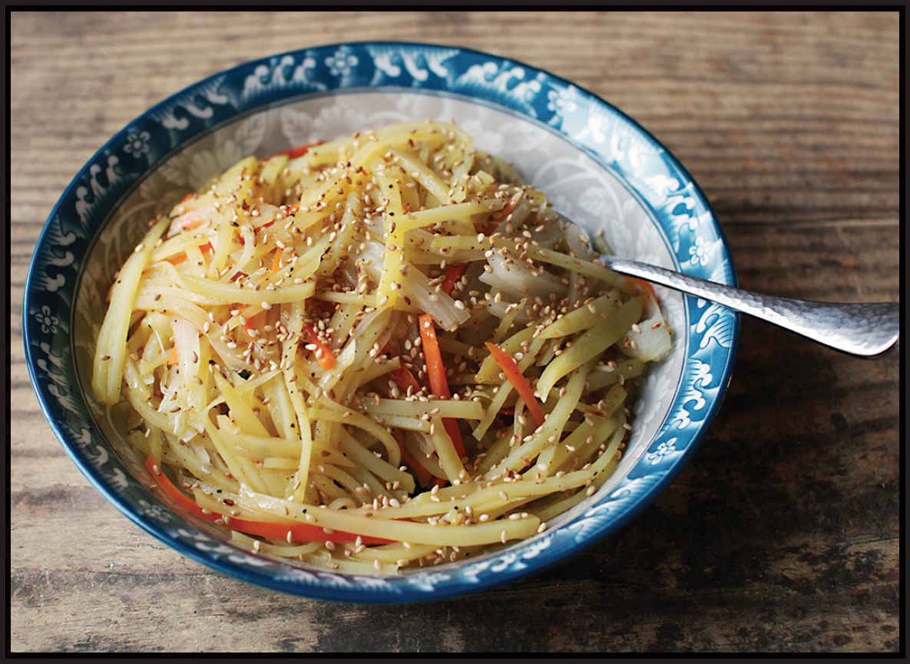
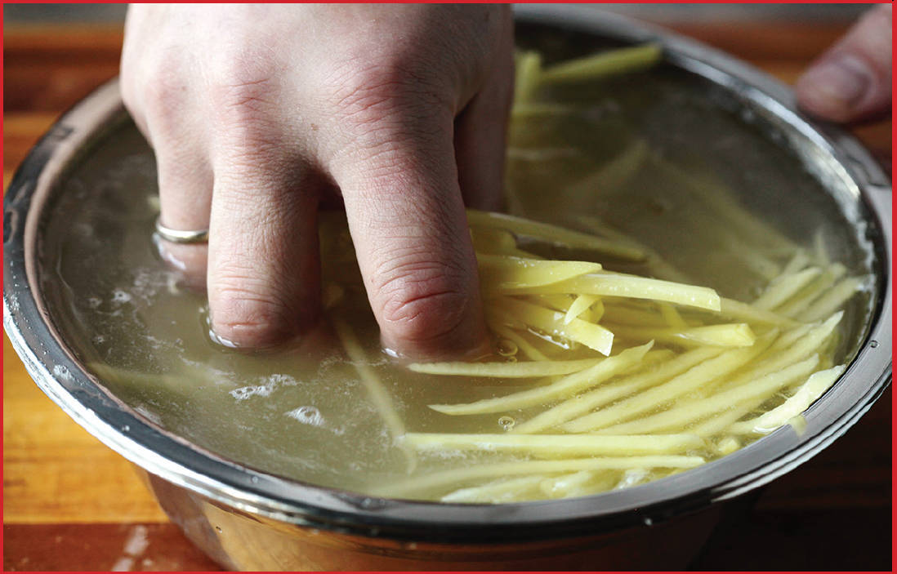

KOREAN STIR-FRIED SHREDDED POTATOES (GAMJACHAE BOKKEUM)
|
Yield Serves 4 as a small side dish |
Active Time 10 minutes Total Time 10 minutes |
You can easily scale this recipe up by 50 or 100 percent. Increase the cooking time after adding the potato by a minute or two to account for the increased volume. If your tap water is particularly soft (low mineral content), you might find that the potatoes soften or turn mushy during cooking. You can fix this issue by boiling your potatoes in acidic water. Add 2 tablespoons (30 ml) distilled white vinegar to 2 quarts (2 l) water and bring it to a boil in your wok. Add the shredded, rinsed potatoes and cook for 30 to 45 seconds (it’s OK if the water loses its boil during this process), drain, spread on a rimmed baking sheet to steam-dry, and proceed with the recipe as directed.
INGREDIENTS
1 large white or Yukon Gold potato (about 8 ounces/225 g)
2 tablespoons (30 ml) peanut, rice bran, or other neutral oil
½ small yellow onion (about 2 ounces/60 g), thinly sliced
½ medium carrot (about 2 ounces/60 g), peeled and cut into fine matchsticks
2 teaspoons (10 ml) roasted sesame oil
Sprinkle of toasted sesame seeds (optional)
Kosher salt and freshly ground black pepper

DIRECTIONS
1Peel the potato and cut into fine matchsticks (see “How to Shred Potatoes for Stir-Fries, here). Rinse in several changes of cold water until the water is completely clear. Spin the potatoes dry in a salad spinner or blot dry with a clean kitchen towel or paper towels.
2Heat a wok over high heat until lightly smoking. Add the oil and swirl to coat. Add the potatoes and stir-fry until translucent and just beginning to turn pale golden brown in spots, 2 to 3 minutes. Add the onions and carrots and continue to stir-fry until the onions and carrots are lightly softened, about 30 seconds. Add the sesame oil and sesame seeds (if using) and season with salt and pepper to taste. Toss to combine, transfer to a serving platter, and serve.
The Science of Rinsing Potatoes
So what exactly is going on that causes shredded potatoes to retain their structure when cooked better than, say, whole or cubed potatoes?
It has to do with the pectin methylesterase (PME) released from inside potato cells and calcium ions present both inside the potato and in the tap water you rinse them in. PME is an enzyme produced by vegetables and microorganisms that can alter pectin, the carbohydrate glue that gives vegetable cell walls their structure. It’s used in food production to help frozen or otherwise processed fruits and vegetables retain their structure—according to a 2014 paper in Applied Biochemistry and Biotechnology,* pectin treated with PME can then interact with calcium ions to form strong networks that are less affected by freezing and cooking than non-PME-treated pectin.
When cutting the potatoes, you end up releasing both PME and calcium ions. With chunky potato cuts, the effect of PME and calcium will be limited to the surface. Dave Arnold of the website Cooking Issues uses commercial PME to his advantage by treating French fries with it before frying, which helps accentuate the difference between the fluffy interior and firm, crisp exterior of a good fry. With finely shredded potatoes, on the other hand, their surface area to volume ratio is so large that they’re effectively all surface, which means that PME and calcium will very rapidly affect the texture of the entire strand. In tests I’ve done, julienned or finely sliced potatoes soaked in hard tap water and then boiled will stay completely intact and firm even when boiled for a full 45 minutes!
The water used to soak and rinse the potatoes can also have an impact on finished texture. Most tap water contains a lot of calcium ions, which have the effect of firming up shredded potatoes. This explains why the hash browns my friends and I make at the hunting cabin in Michigan where all we have is extremely hard well water always come out crispier and firmer than the same hash browns I make at home with relatively soft water. Conversely, if your tap water is extremely soft or if you use distilled water for cooking, the shredded potatoes may come out soft or mushy.
If you are in this situation and find that your potatoes fall apart or get soft rather than remaining crunchy during the stir-fry, there’s an easy solution: par-boil them in acidulated water. A 1975 study in the Journal of the Science of Food and Agriculture† found that cooking potatoes in low pH (acidic) environments can have an even greater strengthening effect on pectin than calcium ions. The potato chip recipe in my book The Food Lab uses this fact to its advantage: par-cooking thinly sliced potatoes in water with a dash of vinegar will give them a firmer, crisper structure when you boil and subsequently fry them, and it works just as well for stir-fried potatoes.

If you have very soft water or find that your potatoes are softening during the stir-fry, start the recipe by bringing a couple quarts of water with a couple tablespoons of distilled vinegar to a vigorous boil, add the rinsed shredded potatoes, and let them blanch for 30 to 45 seconds before draining and continuing the recipes as directed.
*“Large-Scale Single Step Partial Purification of Potato Pectin Methylesterase That Enables the Use in Major Food Applications,” Robin Eric Jacobus Spelbrink and Marco Luigi Federico Giuseppin.
†“Texture of Cooked Potatoes: The Effect of Ions and pH on the Compressive Strength of Cooked Potatoes,” J. Carey Hughes, Alex Grant, and Richard M. Faulks.